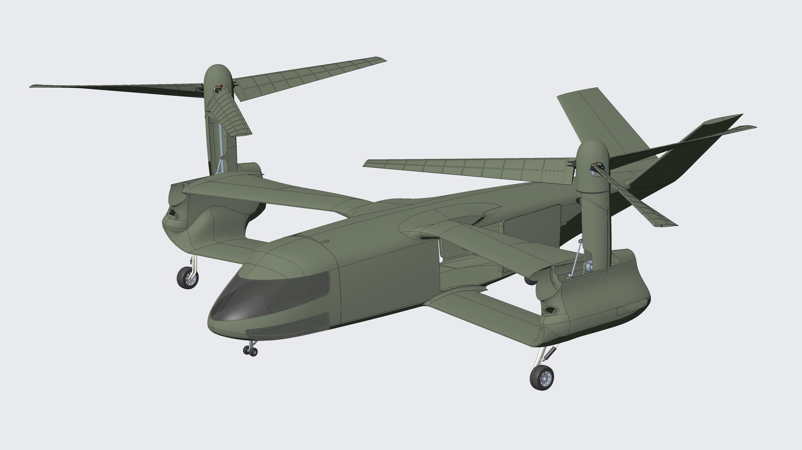

“简刀”倾转旋翼直升机是我们探索的一款与美军 v-280、v-22 拥有相同技术路线的设计方案。 
“简刀”倾转旋翼机外观上最大的特征是它的双翼布局，这也是本方案三个核心创新之一。 “简刀”倾转旋翼机主要在三个方面有别于其他倾转旋翼机：双翼布局 、 可变扭转角桨叶 和 自动配平模式。 这三项技术鼓舞我们将“游戏改变者”的角色，寄希望于“简刀”出鞘。
混沌工厂相信电动航空的未来，然而，为电机提供经济的能源，却有多种选择。纯电短期很难有大的突破；因此混动方案开始广泛地被大载重无人机采用；氢能也拥有不少的支持者。对于更大些的飞行器项目，涡电或许是近期比较靠谱的选择。
我们拟计划与国内某公司合作研制以涡电为动力能源的evtol项目。涡电系统：启动发电一体化航空涡轮发电机，输出功率110kw，重量48公斤，单位油耗0.48kg/kwh，输出电压直流母线是600v
设计起飞重量100kg，四旋翼布局，空机重约30kg（不含能源）主要为各无人机公司应用项目研制提供通用飞行平台。
ABC100采用框架式设计，便于配置各种任务载荷，拓展飞行性能。